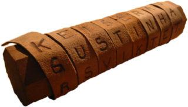

Chiffrement à dents de scie (ou Railfence)
Principe
Le chiffre à dents de scie, ou Railfence, est une méthode de chiffrement par transposition très simple
à mettre en pratique. Elle consiste en la méthode suivante. On écrit le message
sur deux lignes, en écrivant alternativement une lettre sur la ligne supérieure et une lettre sur la ligne inférieure.
Le message crypté est obtenu en lisant alors le message écrit ainsi comme un texte classique. Par exemple, si on veut
chiffrer le message : "QUI SEME LE VENT RECOLTE LA TEMPETE", on écrit :
Q I E E E E T E O T L T M E E
U S M L V N R C L E A E P T
La scytale spartiate

Le principe du chiffrement à dents de scie remonte au moins au Vè siècle avant Jésus-Christ,
avec la scytale spartiate. La scytale est un bâton de bois
autour duquel on enroule un ruban de parchemin. Le message est écrit de gauche à droite, en écrivant
une lettre sur chaque circonvolution, et en passant à la ligne suivante une fois toutes les circonvolutions
remplies. Une fois le parchemin déroulé, le message devient inintelligible.
Pour déchiffrer, le destinataire doit posséder un bâton ayant exactement le même diamètre.
Il lui suffit d'enrouler le parchemin autour du bâton pour retrouver le message original. Le diamètre
du bâton constitue ainsi la clé de chiffrement.
A vous de jouer!
Le formulaire suivant vous permet de coder suivant le chiffrement à dents de scie :
Consulter aussi